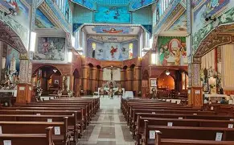
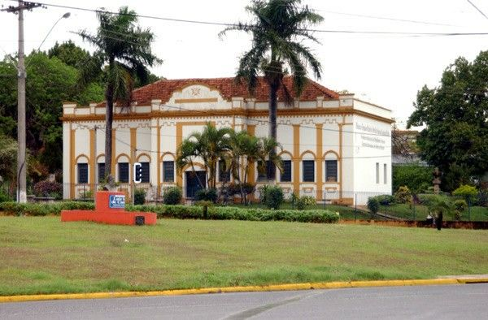
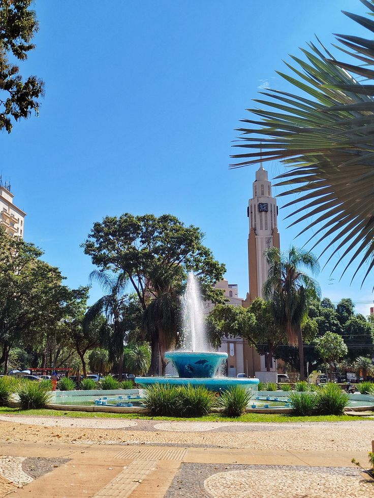
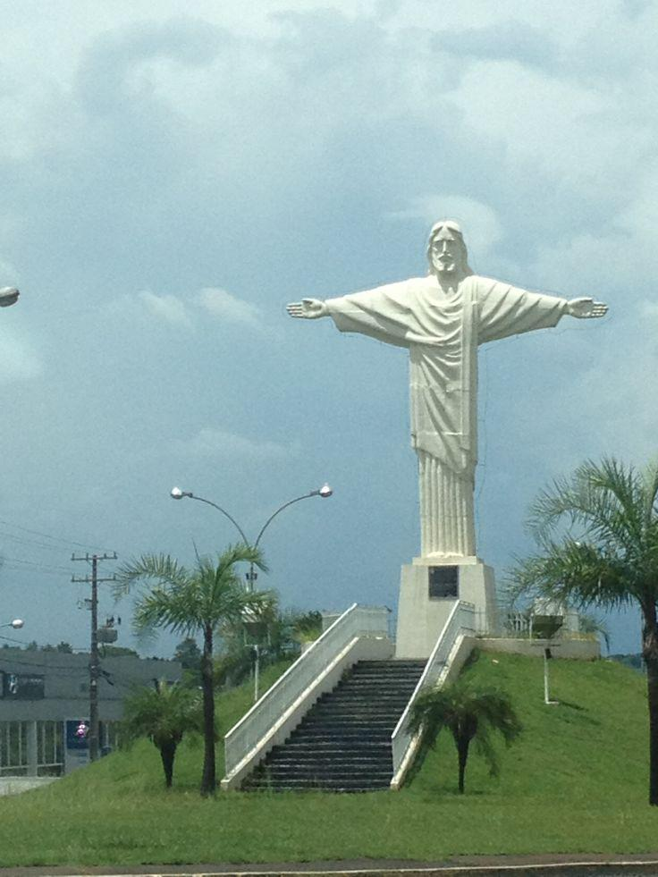
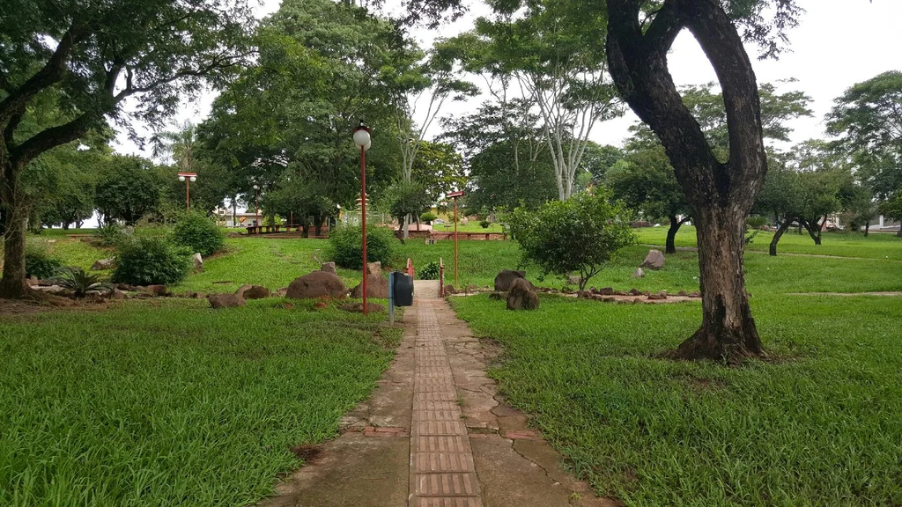

Catedral São Sebastião
Um dos principais símbolos da cidade. Sua história acompanha o desenvolvimento de Presidente Prudente desde os primeiros anos.
Conheça os monumentos, praças e espaços históricos que preservam a memória da cidade.
Lugares que ajudam a contar a história prudentina.

Um dos principais símbolos da cidade. Sua história acompanha o desenvolvimento de Presidente Prudente desde os primeiros anos.

Preserva documentos, fotografias e objetos importantes da história local.

Um dos espaços públicos mais conhecidos da cidade e palco de diversos eventos.

Principal área de lazer da cidade, utilizada para caminhadas, eventos e atividades esportivas.

Importante complexo turístico frequentado por moradores e visitantes.

Monumento religioso que se tornou uma referência visual da cidade.

Espaço que homenageia a influência da cultura japonesa em Presidente Prudente.

Homenagem aos pioneiros e às pessoas que contribuíram para a construção do município.
Os monumentos ajudam a preservar a memória coletiva, valorizando a identidade cultural e histórica de Presidente Prudente para as futuras gerações.